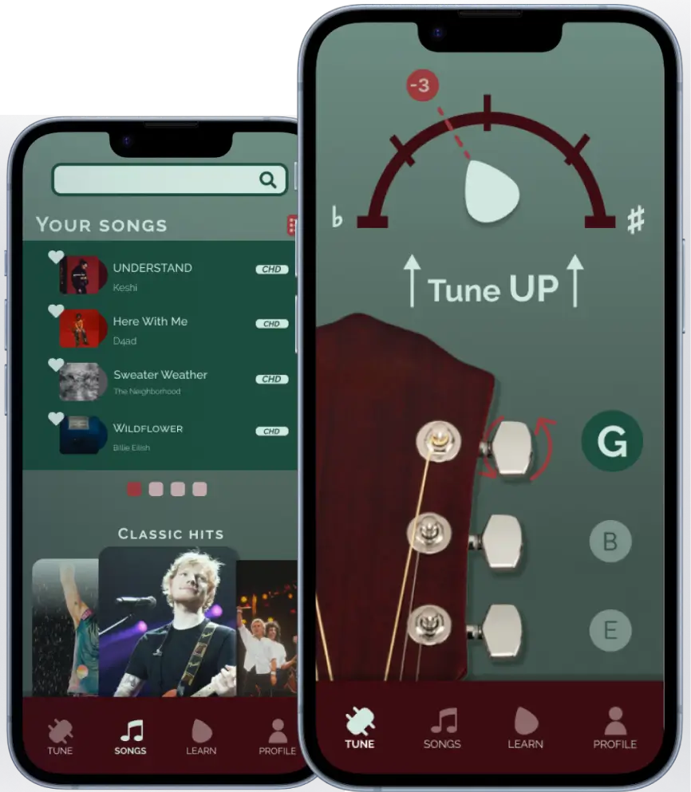

Tune Today
Designing a guitar tuning app!

Role:
UX/UI Designer
Team:
Solo
Tool:
Figma
Duration:
03/2025 - 04/2025
Problem:
As someone who dabbles in guitar, I have used a couple of tuning apps, but none seemed to work well with me. Tuning my guitar was an easy task to do, but the problem mainly was how i wasn't able to learn a song without some level of frustration. Even just finding and getting to the point of being taught the song was a hassle.
Solution:
I decided to create a guitar tuning app that addresses all my needs! Now what exactly are my needs? They include:
A quick and easy way to tune a guitar
Access to guitar tabs and chords
A way to track your progress
Research:
To understand a user's flow, I analyzed an already existing task flow of a guitar tuning app to take note of what not to do. I discovered the excessive amount of screens just to be able to locate and learn a song. Knowing this, I created my wireframes with the objective of a less complicated user flow.

Designing:
Branding:

Microinteractions:
With my research phase completed, I took it upon myself to sketch out around 30 page layout ideas. I looked towards my initial sketch ideas and my finalized wireframes to start thinking about what microinteractions I could implement. I sketched out 5 ideas for my microinteractions. My goals for these interactions were that they make the users' experience not only more enjoyable but also keep them hooked.
Here are some of those sketches!:


Animations:
To create my animations, I didn't just use Figma's features, but I also used another browser software called Jitter.
With enough time and effort, I was able to get the animations looking how I wanted them to be.
Outcome:
Through this ten-week journey, I was able to learn much, especially about microinteractions. Now I understand the role microinteractions play and just how important they are to a user's experience. Although they seem small and might not even be noticed by users, they play a big role
Taking a step back to look over this whole experience, if I had the chance to do this over again, I would definitely do more research about other guitar tuning apps. As well as try talking for a few moments to test out my growing prototype with actual users, to be able to utilize any feedback into my design.